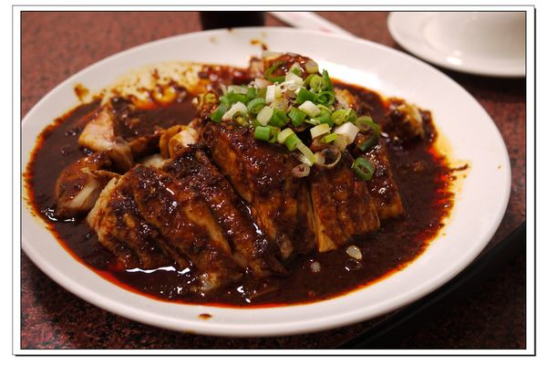
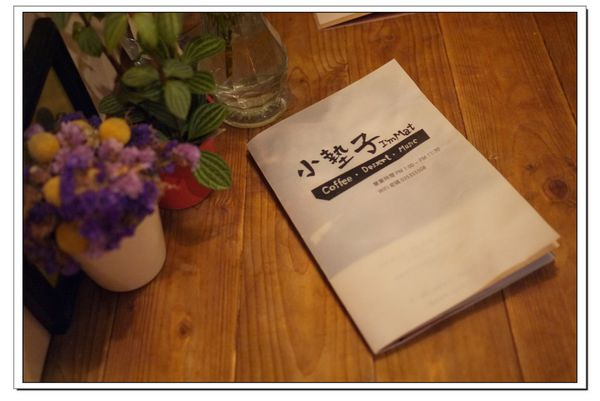

口味獨特的成都川菜館位於凌雲街新建的大鵬國宅 據聞成都川菜原本在眷村經營，後來才又遷移到新的地址 川菜館開業至今近30年，老闆和小雷一樣是湖北人耶XD 當然不是湖北人都吃辣，也不是湖北人愛吃辣 之所以會做出這麼道地傳統的川味料理，主要是老闆少年時曾到成都學做川菜 目前餐廳已經傳承到第二代經營 由老闆的兒子繼續為大家帶來最傳統道地的川味功夫菜 店內因為太多人用餐，就不便拍餐廳環境讓大家瞧瞧，那就先上個菜單吧~ 餐廳的菜色除了招牌四川眷村菜，也有供應一般台菜料理，滿足不吃辣的朋友
這道椒麻雞在大陸四川稱為麻辣口水雞，和泰式料理的椒麻雞大大不相同 白斬雞泡在紅通通的麻辣醬汁裡，雞肉完全吸附醬汁 充滿辛香料的辣醬剛吃下去時辣度還能接受 但漸漸地辣味與麻勁一股腦湧上，那椒麻香氣更是久久不消散，十分夠勁
能夠將鴨皮炸得酥脆，鴨肉又能保持軟嫩，火候掌控的功夫非常重要 也難怪脆皮鴨堪稱成都川菜的招牌菜 而且這麼大隻鴨子只要450元，真是俗又大碗！！
鴨骨裡以青蔥香蒜填充，再加入多種新鮮香料入味 繁雜製作過程總要耗費好幾小時，想一嚐招牌烤鴨的美味建議事先預訂
大腸有點少，因為菜盤轉到我的面前時大腸全被夾光了>///< 然後配菜的四季豆剛好和乾扁四季豆重覆 送菜的阿姨很不好意思的說點菜的小姐沒盡責，沒幫我們注意菜有重覆

大盤跟小盤的蒜泥白肉只差30元，當然要點大盤囉~
水煮牛肉是川菜的非常經典的料理 牛肉是在黃豆芽、豆瓣、椒麻、紅油等多樣香料爆炒後的辣味湯所煮熟 湯頭有著濃郁麻辣香氣，上層浮著油亮亮的辣油(哈！有點恐怖) 雖然辣是辣，但喝起來我倒覺得沒有椒麻雞的辣還要來的嗆辣
小時候老爸下廚煮搶鍋麵時，我總以為這湯麵的名字是他瞎取的 沒想到還真有這道料理，源自大陸北方麵食 搶鍋麵的功夫就在這湯鍋裡的料和麵要炒又要煮 要把握時間將蛋和菜快速翻炒，所以搶又有熗(大火快炒)的意思
選用與蒜泥白肉同樣的三層肉薄片，湯裡放入大量番茄、蒜苗、白菜 另外還加入豆皮、芋頭等配料，湯頭酸中帶有蔬果甘甜 相較水煮牛肉，這湯頭味道溫和許多
吃完重口味的成都川菜滿肚子火辣辣，這時吞點甜食平衡一下剛好 索性就立馬飛奔到小墊子(小墊子是目前我個人排行榜名列前三名的甜點咖啡店^0^) 這回來小墊子又有新發現~~小墊子有新的菜單本了！！！ 最早之前小墊子的菜單是描繪在空白A4紙上 後來又改成同樣是A4大小的牛皮紙張，再套上透明塑膠夾保護 現在的菜單質感很不錯哩~
小墊子的自製果醬
這次點了百香果生乳酪蛋糕，好吃喔！ 不知道是太愛吃甜食，還是剛剛吃太鹹，不到10分鐘蛋糕快被我嗑完 為了保持一點淑女風度，我留了最後一口給老黃嚐，超貼心的耶，呵呵~
http://leiioo3.pixnet.net/blog/post/111488890-%E3%80%90%E9%A3%9F%E3%80%91%E6%96%B0%E7%AB%B9%E5%8C%97%E5%8D%80%E3%80%82%E6%88%90%E9%83%BD%E5%B7%9D%E8%8F%9C%E9%A4%A8%E2%80%A7%E7%9C%B7%E6%9D%91%E5%AE%B6%E9%84%89%E5%8F%A3%E5%91%B3